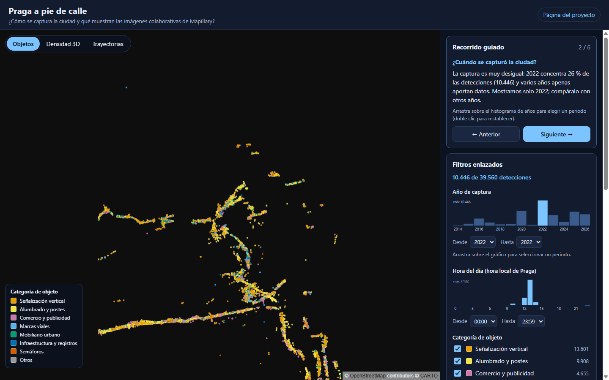
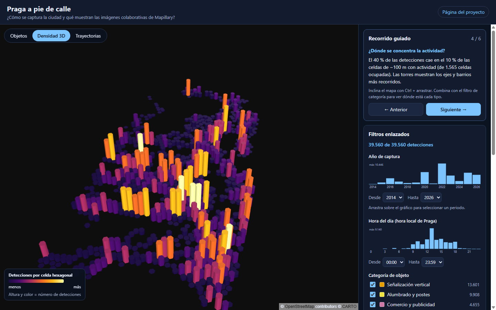
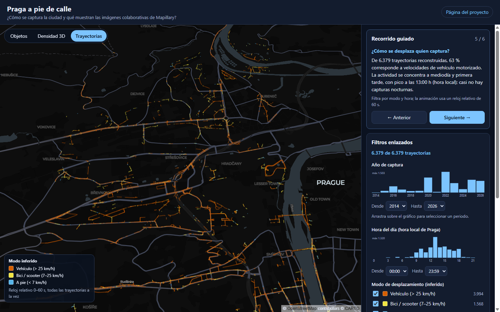

¿Qué dicen las imágenes colaborativas de Mapillary sobre quién captura la ciudad?
DS5343 Data Visualization · Semana 12: borrador refinado y crítica de pares
[Integrantes del equipo]
map_features descargados (lon 14,350–14,415).| Semana 10 | Semana 12 |
|---|---|
| Un HTML generado desde Python | App estática con datos separados y recorrido guiado |
| Solo trayectorias | Objetos, densidad 3D y trayectorias |
| Filtros independientes | Filtros enlazados: año · hora · categoría · modo |
| Sin contexto ni límites | Narrativa, hallazgos con cifras y bloque de límites |
| Sin accesibilidad | Teclado, ARIA, paleta segura para daltonismo, responsive |

2022 concentra el 26,4 % de las detecciones; 2020 el 15,4 %; 2025 el 14,6 %.
2014 y 2021 casi no aportan datos.
Un solo año filtrado revela una campaña que recorre pocos ejes.

39,5 % de las detecciones en el 10 % de las celdas de ~100 m.
Dominan señalización (34 %) y alumbrado (25 %); mobiliario urbano solo 6 %.
Hexágonos 3D + filtro de categoría para ver dónde está cada tipo.

62,6 % vehículo · 24,6 % bici/scooter · 12,8 % a pie (inferido por velocidad).
Pico a las 13:00 h; casi sin capturas nocturnas.
Reloj de 24 h: superpone todas las fechas (ciclo diario, no un día concreto).
map_features (lotes 3–5 pendientes).[Añadir aquí la síntesis de la retroalimentación real recibida y las decisiones: ver PeerCritiqueResponse.pdf]
| Tarea | Estado |
|---|---|
| Descargar lotes 3–5 y regenerar datos | Pendiente (requiere token) |
| Explicar discrepancia imágenes/detecciones | Pendiente |
| Comparación de dos años · pruebas con usuarios | Pendiente |
| Paper final, teaser, video, póster | Borrador de paper listo |
| Publicar en GitHub Pages | Workflow listo |